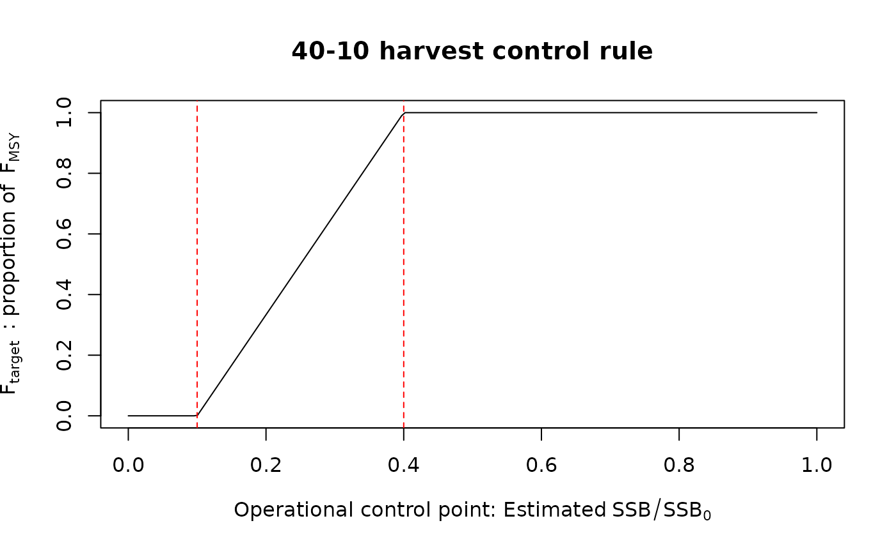

An output control rule with a ramp that reduces the target F (used for the TAC recommendation) linearly as a function of an operational control point (OCP) such as spawning depletion or spawning biomass relative to that at MSY. The reduction in F is linear when the OCP is between the target OCP (TOCP) and the limit OCP (LOCP). Above the TOCP, the target F is maximized. Below the LOCP, the target F is minimized. For example, the TOCP and LOCP for 40% and 10% spawning depletion, respectively, in the 40-10 control rule. Ftarget is FMSY above the TOCP and zero below the LOCP. This type of control rule can generalized with more control points (>2) in HCR_segment. Class HCR objects are typically used with function make_MP.
HCR_ramp( Assessment, reps = 1, OCP_type = c("SSB_SSB0", "SSB_SSBMSY", "SSB_dSSB0", "F_FMSY", "F_F01", "F_FSPR"), Ftarget_type = c("FMSY", "F01", "Fmax", "FSPR"), LOCP = 0.1, TOCP = 0.4, relF_min = 0, relF_max = 1, SPR_OCP = 0.4, SPR_targ = 0.4, ... ) HCR40_10(Assessment, reps = 1, Ftarget_type = "FMSY", SPR_targ = 0.4, ...) HCR60_20(Assessment, reps = 1, Ftarget_type = "FMSY", SPR_targ = 0.4, ...) HCR80_40MSY(Assessment, reps = 1, Ftarget_type = "FMSY", SPR_targ = 0.4, ...)
Arguments
| Assessment | An object of class Assessment with estimates of FMSY or UMSY, vulnerable biomass, and spawning biomass depletion in terminal year. |
|---|---|
| reps | The number of stochastic samples of the TAC recommendation. |
| OCP_type | The type of operational control points (OCPs) for the harvest control rule used to determine the reduction in F.
By default, use ( |
| Ftarget_type | The type of F used for the target fishing mortality rate. |
| LOCP | Numeric, the limit value for the OCP in the HCR. |
| TOCP | Numeric, the target value for the OCP in the HCR. |
| relF_min | The relative value of Ftarget (i.e., as a proportion) if |
| relF_max | The relative value of Ftarget if |
| SPR_OCP | The value of spawning potential ratio for the OCP if |
| SPR_targ | The target value of spawning potential ratio if |
| ... | Miscellaneous arguments. |
Value
An object of class Rec with the TAC recommendation.
Details
HCR_ramp is the generic ramped-HCR function where user specifies OCP and corresponding limit and target
points, as well as minimum and maximum relative F target.
HCR40_10 is a common U.S. west coast control rule (LOCP and TOCP of 0.1 and 0.4 spawning depletion,
respectively), while HCR60_20 is more conservative than 40-10, with LOCP and TOCP of 0.2 and 0.6
spawning depletion, respectively).
HCR80_40MSY uses 0.8 and 0.4 SSBMSY as the LOCP and TOCP, respectively.
References
Deroba, J.J. and Bence, J.R. 2008. A review of harvest policies: Understanding relative performance of control rules. Fisheries Research 94:210-223.
Edwards, C.T.T. and Dankel, D.J. (eds.). 2016. Management Science in Fisheries: an introduction to simulation methods. Routledge, New York, NY. 460 pp.
Punt, A. E, Dorn, M. W., and Haltuch, M. A. 2008. Evaluation of threshold management strategies for groundfish off the U.S. West Coast. Fisheries Research 94:251-266.
Restrepo, V.R. and Power, J.E. 1999. Precautionary control rules in US fisheries management: specification and performance. ICES Journal of Marine Science 56:846-852.
See also
Author
Q. Huynh & T. Carruthers
Examples
# 40-10 linear ramp Brel <- seq(0, 1, length.out = 200) plot(Brel, HCRlin(Brel, 0.1, 0.4), xlab = expression("Operational control point: Estimated"~SSB/SSB[0]), ylab = expression(F[target]~~": proportion of"~~F[MSY]), main = "40-10 harvest control rule", type = "l") abline(v = c(0.1, 0.4), col = "red", lty = 2)  # create a 40-10 MP to run in closed-loop MSE DD_40_10 <- make_MP(DD_TMB, HCR40_10) # Alternatively, DD_40_10 <- make_MP(DD_TMB, HCR_ramp, OCP_type = "SSB_SSB0", LOCP = 0.1, TOCP = 0.4) # An SCA with LOCP and TOCP at 0.4 and 0.8, respectively, of SSB/SSBMSY SCA_80_40 <- make_MP(SCA, HCR_ramp, OCP_type = "SSB_SSBMSY", LOCP = 0.4, TOCP = 0.8) # A conservative HCR that fishes at 75% of FMSY at B > 80% BMSY but only reduces F # to 10% of FMSY if B < 40% BMSY. SCA_conservative <- make_MP(SCA, HCR_ramp, OCP_type = "SSB_SSBMSY", LOCP = 0.4, TOCP = 0.8, relF_min = 0.1, relF_max = 0.75) # Figure of this conservative HCR Brel <- seq(0, 1, length.out = 200) Frel <- HCRlin(Brel, 0.4, 0.8, 0.1, 0.75) plot(Brel, Frel, xlab = expression("Operational control point: Estimated"~SSB/SSB[MSY]), ylab = expression(F[target]~":"~~F/F[MSY]), ylim = c(0, 1), type = "l") abline(v = c(0.4, 0.8), col = "red", lty = 2)